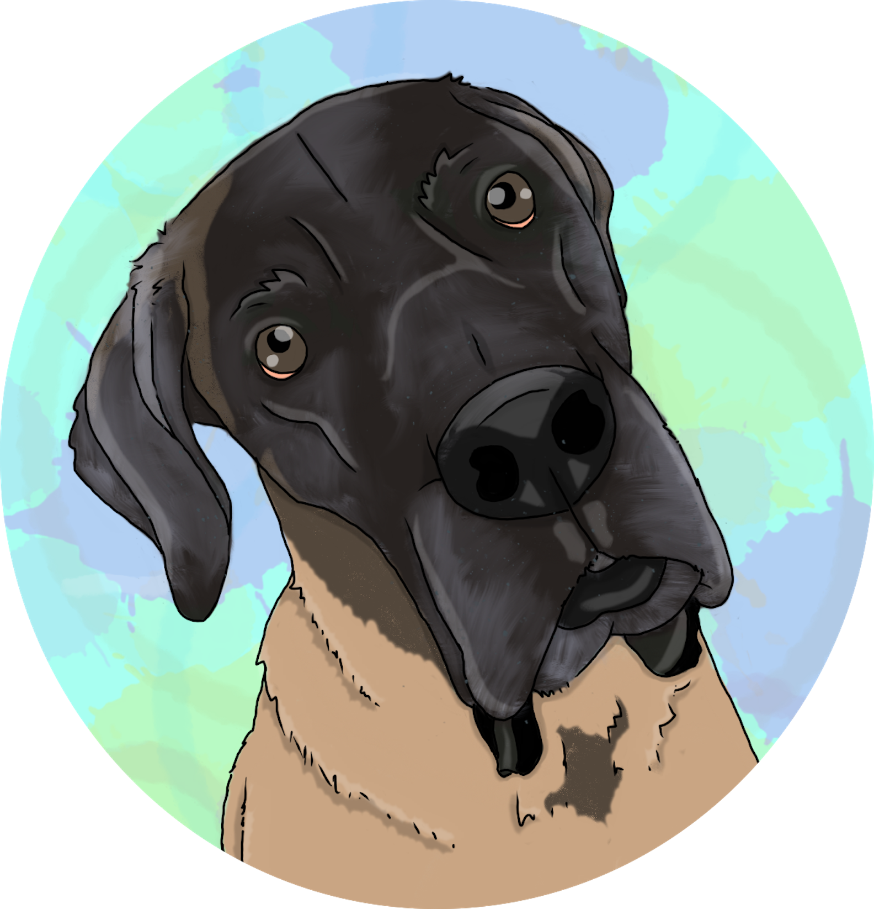
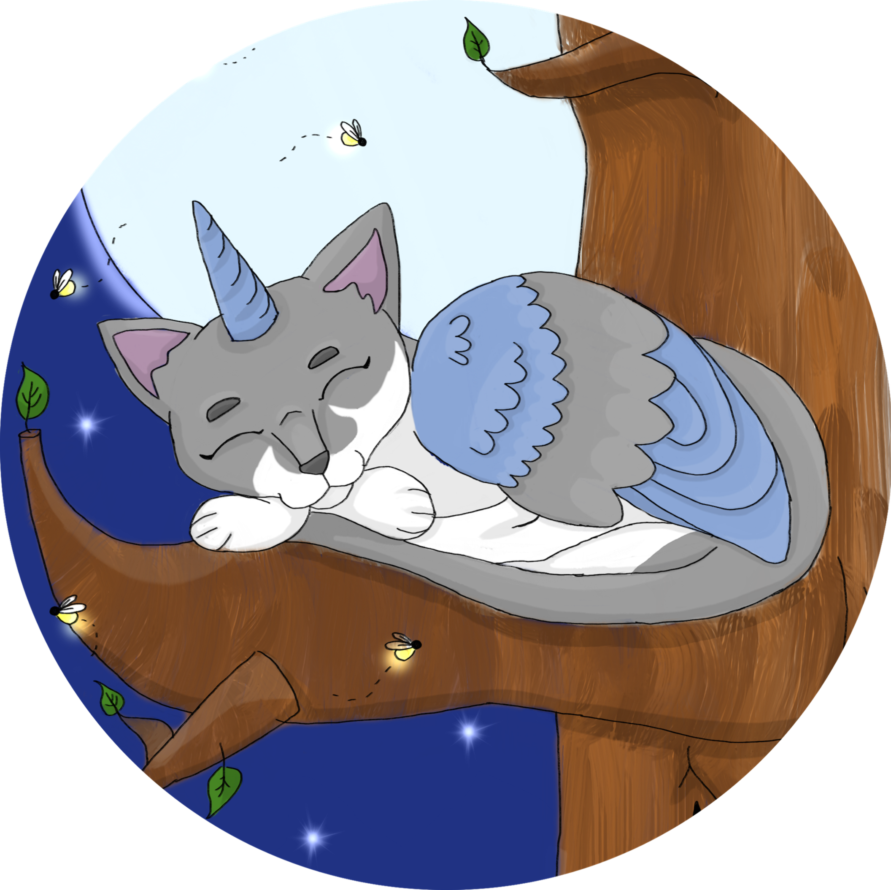

Hello, I'm Sarah Ann Williams
Welcome to my page! I'm a recent graduate from Northwestern University's web development Coding Bootcamp. I have a background in Psychology and informal youth education that boils down to a lifelong love of learning and creating.
In addition to building web apps and familiarizing myself with new and fun technologies, I also create pet portraits and write Dungenons & Dragons campaigns.

My Skillset
Languages
HTML
CSS
JavaScript
Mongo
SQL
Tools
Bulma
Express.js
Node.js
React.js
Sequelize
Mongoose
Spotlight Project: Graveworld
A clever little web game that allows the user to create a hero and lead them through an adventure to solve problems, answer riddles, and save the realm from an evil demon. Utilizes MERN stack.

Other Development Projects
Click to visit each site!

PetLink: Check it out on Github!

Book Buddy: Check it out on Github!

TechTalk: Check it out on Github!

Weather Friend: Check it out on Github!
Sample Pet Portraits
Now accepting comissions!
 